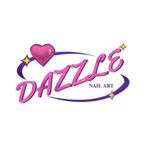

Trade Mark Journal No.2025/019 9 May 2025
UK00004191636 19 April 2025 (3,8)

- Class 3
- Artificial nails; Adhesives for artificial nails; False nails; Nails (False -); Glue for strengthening nails; Adhesives for fixing false nails; Nail strengtheners; Nail polish remover pens; Nail enamel removers; Nail enamel remover; Nail gel; Fingernail decals; Nail cosmetics; Nail polish removers; Lotions for strengthening the nails; Nail polish removers [cosmetics]; Nail polish remover; Nail varnish removers; Preparations for removing gel nails; Nail hardeners [cosmetics]; Nail tips [cosmetics]; Nail hardeners; Gel nail removers; Nail varnish remover [cosmetics]; Preparations for reinforcing the nails; Nail tips; Nail primer [cosmetics]; Nail art stickers; Nail polish base coat; Nail buffing preparations; Nail polish top coat; Nail base coat [cosmetics]; Nail conditioners; Nail varnish removing preparations; Cosmetic nail preparations; Artificial nails for cosmetic purposes; Artificial fingernails; Nail cream; Nail repair preparations; Adhesives for affixing false nails; Adhesives for affixing artificial fingernails; Fingernail tips; False fingernails; Adhesive tapes for affixing false hair; Cuticle oil; Cuticle oils; Glue removers; Nail care preparations; Adhesive removers.
- Class 8
- Nail buffers; Nail files; Nail clippers; Cuticle pushers; Manicure sets; Nail skin treatment trimmers.
DAZZLENAILSART LIMITED